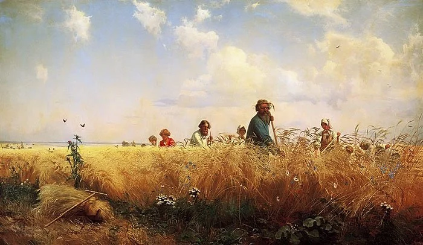
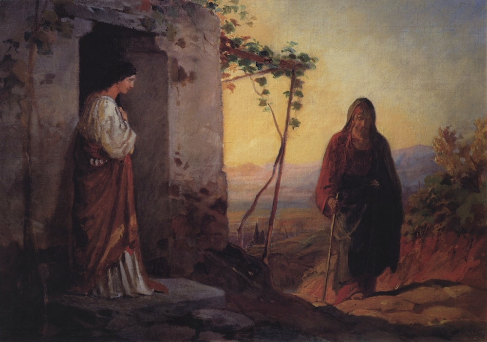

Art

Russian author Leo Tolstoy’s view of art is most saliently articulated in his essay What is Art? (1896). For him, art is the capacity “to evoke in oneself a feeling one has once experienced and, having evoked it in oneself, then, by means of movements, lines, colours, sounds or forms expressed in words, so to transmit that feeling that others may experience the same feeling” (Tolstoy 67). This definition is deliberately set against the societal view of art as a source of pleasure, and against other common definitions — art as the “manifestation of beauty,” as the “release of excess energy,” or as the “production of pleasing objects” — all of which Tolstoy rejects because they reduce art to a transaction between the artist and the viewer’s taste rather than an act of sincere human communion (Tolstoy 67). What matters, instead, is art’s capacity to transmit feelings across time and generations, making it the very faculty that defines humanity (Tolstoy 67–8).
The measure of this capacity is what Tolstoy calls “infectiousness,” determined by the individuality, clarity, and sincerity of the artist (Tolstoy 72). These three qualities can ultimately collapse into the last one: “if the artist is sincere he will express the feeling as he experienced it, [and] as each man is different from everyone else, his feeling will be individual for everyone else” (Tolstoy 71). Sincerity is the quality Tolstoy finds in peasant art and conspicuously absent in upper-class art, which Tolstoy thinks is more motivated by their “covetousness or vanity” — a corruption that severs the emotional bond between artist and audience that art is meant to create (Tolstoy 72).
It is this philosophy that Tolstoy embeds in Mikhailov, the Russian painter, whom Anna and Vronsky encounter in Italy. Mikhailov represents the sincere, instinctive creativity that Tolstoy’s essay prizes: his process of revitalizing a painting is described as “removing the veils” that obscured its essence, triggered not by calculation but by an accidental spot of candle-grease (Tolstoy 472). He strives to convey something “no one ever had conveyed” and of an inner compulsion — a fidelity to his own experience of feeling that mirrors Tolstoy’s definition of artistic sincerity. Vronsky, by contrast, represents an aristocratic dilettante, as his painting is motivated by social aspiration rather than authentic feeling, making it, in Tolstoy’s terms, not art at all (Tolstoy 72).
One artistic movement that epitomizes Tolstoy’s vision in mid-19th-century Russia is the Peredvizhniki, or the Wanderers. Founded by figures such as Grigori Miasoedov and Nikolai Ge, the movement arose in direct opposition to the Imperial Academy of Arts, a rigidly hierarchical institution that treated artists as civil servants, enforced strict police oversight, and confined students to classical or mythological subjects such as The Festival of the Gods in Valhalla (Valkenier 34). Rejecting this narrow focus on antiquity, the Wanderers turned instead to contemporary Russian life, depicting the peasantry, bureaucratic corruption, and social suffering to challenge the stifling conventions of official artistic expression (Valkenier 20). This commitment to social reality over aesthetic convention placed them squarely within Tolstoy’s framework. Like him, they believed that art’s value lay not in pleasing the educated elite but in transmitting authentic human experience. Many of the movement’s founders came from humble backgrounds. They lacked formal education, which sharpened both their sense of alienation from Academy culture and their drive to make art accessible beyond it. Rather than relying on state patronage, they funded their work through ticket sales from traveling exhibitions, reaching middle-class audiences in the peripheral provinces of the Empire (Valkenier 42). In that way, the Wanderers enacted, in institutional form, Tolstoy’s conviction that genuine art belongs to the people, not to the court.
In Anna Karenina, Mikhailov’s fraught relationship with his aristocratic visitors reflects the social dynamics the Peredvizhniki faced. Before the group even visits his studio, Golenishchev dismisses Christ before Pilate for embodying what he calls the “old Ivanov-Strauss-Renan attitude” – that is, a historicized, demystified portrayal of Christ rather than a reverential religious icon (Tolstoy 469). That “realism of the new school” was the kind of unflinching realism the Peredvizhniki espoused, yet the Academy deplored. His hostility goes beyond aesthetics, as he charges Mikhailov with atheism, materialism, and devotion to the ”literature of negation,” attributing these views to his lack of classical education (Tolstoy 470). This charge echoes the Academy’s broader dismissal of the Peredvizhniki as uncultured outsiders whose rejection of classical subjects was not artistic vision but intellectual deficiency. In a similar vein, Vronsky, styling himself a “Russian Maecenas” who ought to support the artist “regardless of whether his painting was good or bad,” approaches Mikhailov not as a peer but as an object of charity, associating him with poverty and social deviance (Tolstoy 469). Golenishchev’s intellectual disdain and Vronsky’s patronizing generosity reflect how the educated elite marginalized the Peredvizhniki, scorned for their realism and accepted by wealthy patrons only in ways that reinforced their inferior status.
Vronsky’s limitations as a painter further illustrate what Tolstoy means by the corruption of upper-class art. Unable to access what Mikhailov sees as the true source of creativity –– feeling and inner depth –– Vronsky can only imitate surface technique, incapable of being “inspired directly by what resides in the soul” without worrying about style (477). For Mikhailov, this reverses the relationship between form and content: technique should serve feeling, not substitute for it, and without spontaneity and intuition, even the most skilled painter cannot produce a compelling work (Tolstoy 477). The fact that Vronsky took up painting in the first place not out of artistic vocation but to fill the tedium of his idle life in Italy, to fulfill a “desire for desires,” as Tolstoy puts it, confirms exactly this diagnosis (Tolstoy 466). His art is a leisure activity borne of his boredom, which is the very opposite of the Peredvizhniki’s conviction that painting must be rooted in real experience and social purpose.
Kitty and Anna’s relationships with art further illustrate Tolstoy’s discernment between sincere and corrupted artistic practice. Kitty playing the piano is framed entirely in terms of the pleasure it gives others: the Princess praises her simply because “you’d bring us so much pleasure,” reducing art to the kind of social performance Tolstoy explicitly rejects in “What is Art?” (Tolstoy 224). Anna, a writer of children’s books, carries a different but equally revealing compromise. She takes up children’s books not out of spontaneity but to “think up amusements for herself;” art becomes a distraction from her social isolation rather than a real, creative impulse (Tolstoy 706). What makes her case particularly striking is that Anna herself sees through it: she eventually recognizes her writing as “just a deception, just morphine under another name,” an admission that she is using art as a sedative rather than a means of authentic expression (Tolstoy 706). Neither character, then, practices art as a spontaneous, sincere transmission of feeling. Instead, both reflect the broader corruption Tolstoy diagnoses in upper-class artistic life: art deployed as social currency or as a remedy for idleness, rather than from the authentic human experience that alone gives it value.

Works Cited
- Tolstoy, Leo. Anna Karenina. Translated by Richard Bartlett, Oxford University Press, 2014.
- Tolstoy, Leo. Late Steps: The Late Writings of Leo Tolstoy. Penguin UK, 2019.
- Valkenier, E. Russian Realist Art: The Peredvizhniki and Their Tradition. Ardis, 1977.